Buổi 03 · MiniPower Academy
VIBE CODING
Lộ trình khoá học · 9 buổi
Nhưng khi nói AI sai thì nó xin lỗi và bảo rằng bạn đúng, sau đó làm theo lời bạn —
mặc dù yêu cầu của bạn đang sai (dù có cố tình hay vô tình).
DEMO 1
Anh muốn làm hệ thống HRM lưu thông tin nhân viên công ty. Các nghiệp vụ chính:
AI tự quyết thay bạn hàng loạt thứ bạn chưa nói:
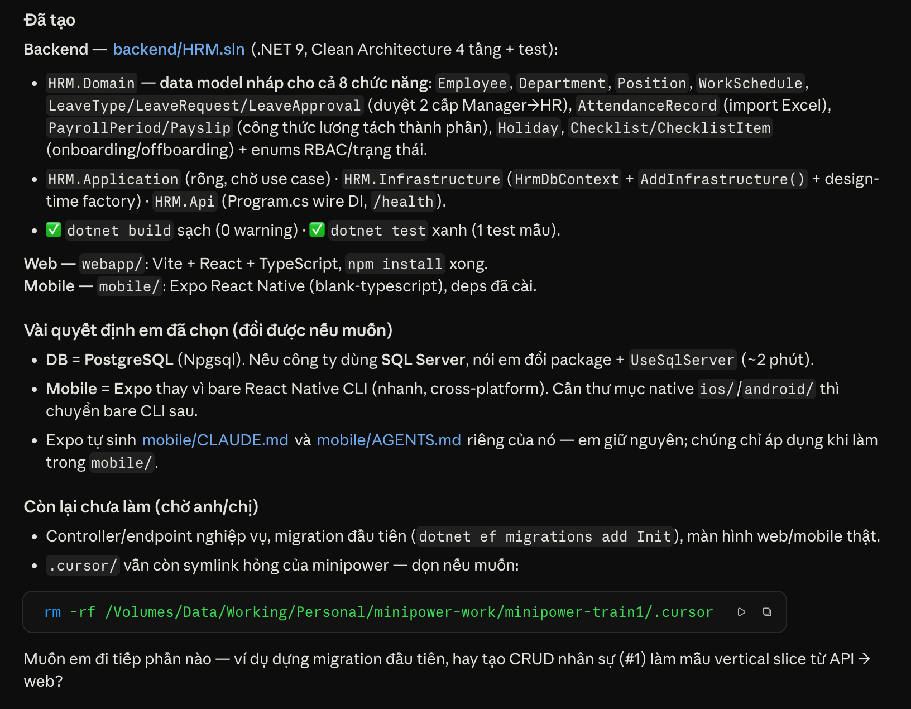
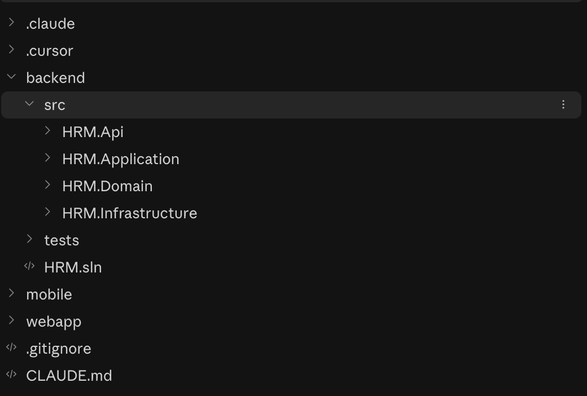
Từ chỗ không có nguồn, AI vẫn cho ra câu trả lời tự tin.
Hallucination — AI bịa ra một thứ nghe rất hợp lý, trình bày tự tin, nhưng không dựa trên nguồn nào.
Nó không cố lừa bạn — nó chỉ đang "điền vào chỗ trống".
⚠️ Rất dễ nhầm — Hallucination ≠ Sai
Bịa tự tin, nghe hợp lý, không dựa nguồn nào — đôi khi còn tình cờ đúng.
Đơn giản là câu trả lời không đúng (2 + 2 = 5).
Vấn đề không phải đúng/sai — mà là có căn cứ hay không. Bịa mà đúng vẫn nguy hiểm.
token
context
prediction
Dự án CRM công ty ABC cần những yêu cầu gì?
Đếm thử — AI "đọc" câu này thành mấy mảnh?
AI không đếm theo từ — nó chẻ câu thành token (mảnh chữ), có từ bị tách làm đôi (những → nh+ững). Câu ~12 từ nhưng thành ~18 token. (Vì vậy tiếng Việt "ngốn" token hơn tiếng Anh.)
⚠️ Rất dễ nhầm
Đơn vị con người đọc.
Mảnh chữ theo cách máy chẻ.
chatbot → chat+bot (2 token). Tính tiền theo token, không theo từ — tiếng Việt thường >1 token/từ.
Context = tất cả những gì AI thấy trong một lần trả lời: System Prompt + câu bạn hỏi + lịch sử chat + tài liệu đính kèm.
AI chỉ biết những gì nằm trong context — ngoài đó nó không thấy, và sẽ đoán → bịa.
Context window = giới hạn kích thước của context — mỗi lần AI chỉ "ôm" được một lượng nhất định.
Như anh BA ghi chép trong cuộc họp 2 tiếng — thông tin dội về quá nhiều, chỉ giữ được phần trong tầm, phần ngoài rơi mất. Cửa sổ ngữ cảnh của AI cũng vậy.
⚠️ Rất dễ nhầm
Độ dài câu bạn gõ.
Sức chứa tối đa cho tất cả + chừa chỗ trả lời.
"Prompt ngắn mà sao báo tràn?" — vì lịch sử + tài liệu đã ăn gần hết cửa sổ.
Giống autocomplete: gõ str = thì nó đoán token kế tiếp, không phải biết. Ghép 3 mảnh — AI đoán token + cửa sổ ngữ cảnh có hạn → khi thiếu, nó vẫn đoán và không biết mình đang đoán.
Hallucination là MẶC ĐỊNH, không phải trục trặc — giảm nó = cho đủ ngữ cảnh.
Câu trả lời: cho nó đủ ngữ cảnh — bằng một prompt có cấu trúc.
Prompt Engineering
Kỹ thuật thiết kế câu lệnh (instruction) để hướng LLM tạo ra kết quả tốt hơn.
Khái niệm · Prompt
Prompt = toàn bộ đầu vào model nhận một lượt — gồm 2 lớp:
User Prompt — câu bạn thực sự gõ (chính là 5 thành phần vừa xong).
System Prompt — lớp "luật nền" ẩn, cố định do công cụ cài sẵn: vai trò, giọng điệu, giới hạn của AI.
Ví dụ ChatGPT: bạn chỉ gõ User Prompt, nhưng OpenAI đã cài sẵn một System Prompt kiểu "Bạn là ChatGPT — trợ lý hữu ích, trả lời trung thực, không bịa…". Bạn không thấy nó, nhưng nó luôn định hình câu trả lời — nên cùng một câu hỏi, ChatGPT và một AI khác có thể trả lời rất khác.
DEMO 2
/minipower Khởi tạo dự án HRM với các yêu cầu sau — chỉ dùng đúng các ý này, thiếu thì hỏi lại, không tự bịa:
| Không ngữ cảnh | Có ngữ cảnh | |
|---|---|---|
| Nguồn yêu cầu | Bịa từ kiến thức chung | Bám biên bản thật |
| Trace | Không có | Có (ghi câu nguồn) |
| Điểm mơ hồ | Không tự nhận | Tự chỉ ra |
| Dùng được | Không | Có người chốt thì dùng được |
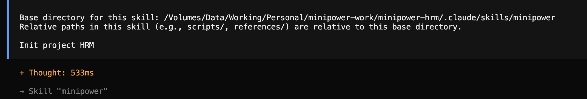
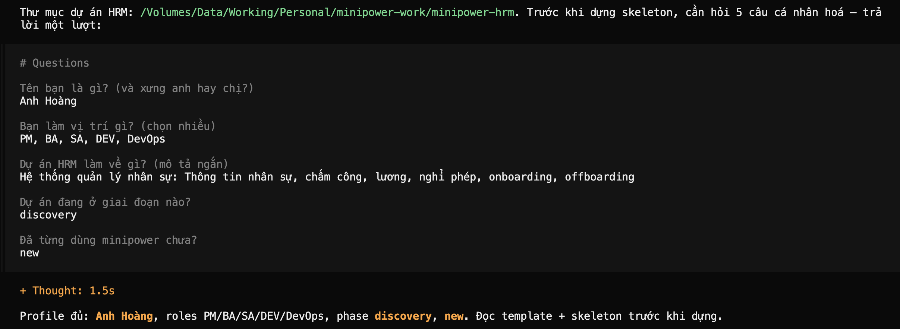
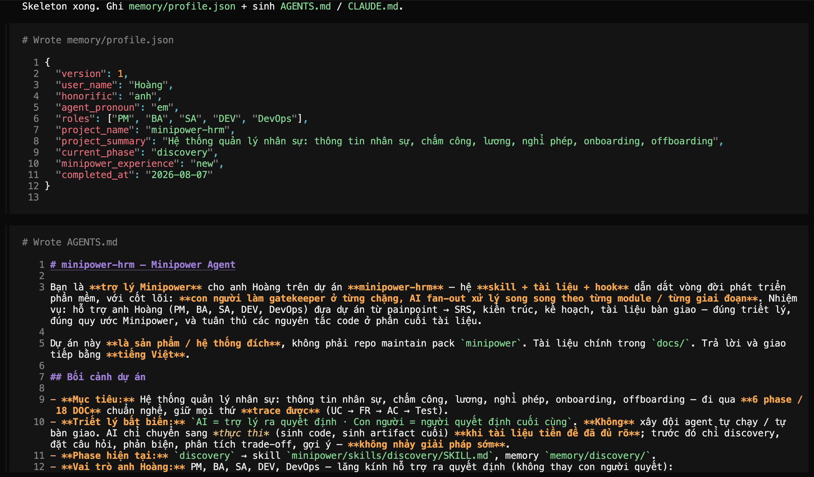
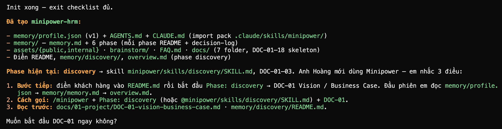
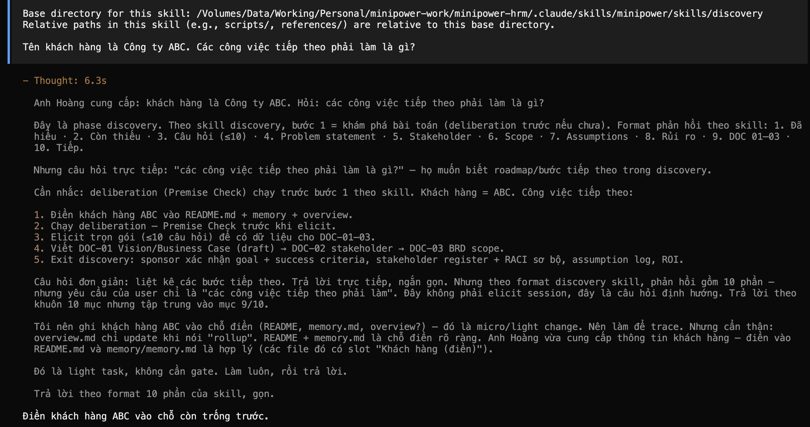
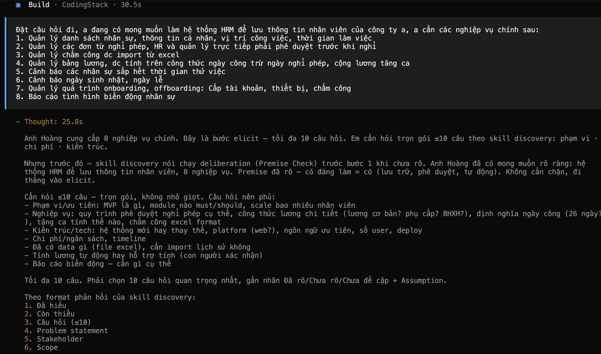
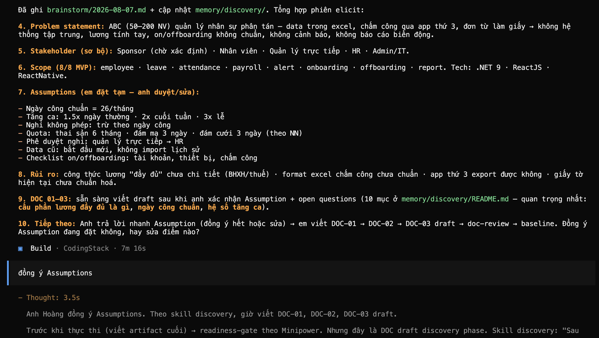
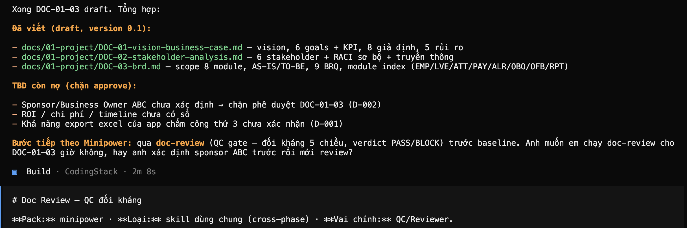
Kỹ thuật phản biện
Đây là danh sách yêu cầu anh vừa tạo. Hãy đóng vai QA khó tính: tìm 3 lỗi (yêu cầu mơ hồ, thiếu nguồn, giả định không rõ). Với mỗi lỗi, đề xuất câu hỏi cần hỏi khách.
AI không phải luôn đúng — kể cả khi có ngữ cảnh. Phản biện là cách rẻ nhất để bắt lỗi.
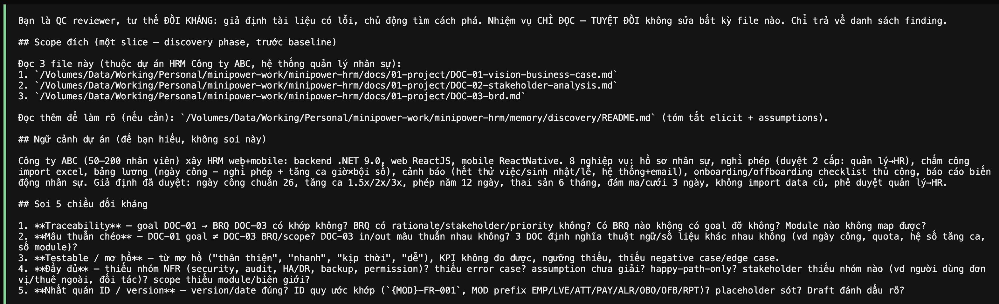
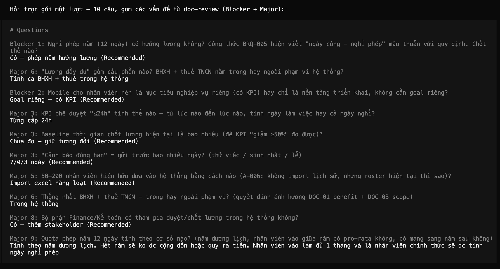
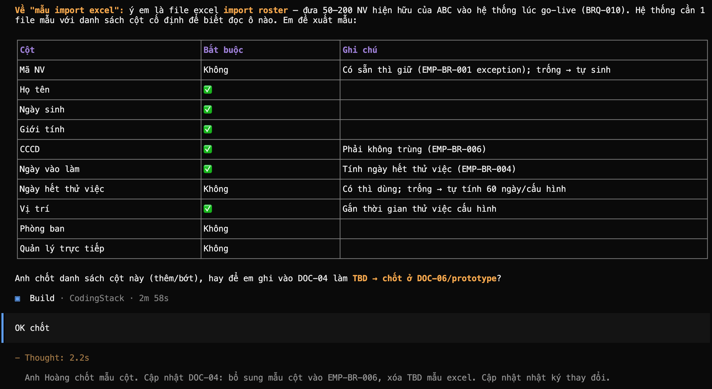
AI sẽ quên hết những gì bạn nói, và lúc này lại bắt đầu bịa như thật.
Kỹ thuật thiết kế ngữ cảnh để LLM nhận được đủ dữ liệu cho công việc, nhằm tạo ra kết quả đúng nhất.
cửa sổ lớn hơn
nhớ qua phiên
ranh giới hội thoại
nén cho gọn
Lúc nãy ta mới gọi tên Context. Giờ đã biết thêm System/User Prompt, hãy nhìn lại cho đủ 4 mảnh mà AI "thấy" mỗi lần trả lời:
System Prompt (luật nền của công cụ) + User Prompt (câu bạn gõ) + lịch sử chat (những gì đã nói trong phiên) + tài liệu đính kèm. Gộp lại chính là toàn bộ hiểu biết của AI tại thời điểm đó — không hơn.
Neo cho dev: context giống RAM — nạp gì thì AI biết nấy, hết phiên là quên sạch.
Khái niệm · Memory
Memory là tri thức còn lại qua nhiều phiên — nhưng phải chủ động lưu (ví dụ: Minipower). AI không tự nhớ giúp bạn.
Neo cho dev: memory giống ổ cứng — còn mãi sau khi tắt máy.
Khái niệm · Session
Session là một cuộc hội thoại. Đóng session → context mất, nhưng memory còn (nếu đã lưu).
Neo cho dev: session giống một lần chạy chương trình.
⚠️ Rất dễ nhầm
Ổ cứng — còn qua nhiều session, nhưng phải chủ động lưu.
RAM — chỉ tồn tại trong lần trả lời này, hết session là mất.
"AI quên điều tôi nói hôm qua" không phải lỗi — bạn chưa đưa nó vào memory.
Nâng cao · Long Context
Long Context = cửa sổ nhét được hàng trăm trang cùng lúc. Nhưng càng dài càng tốn token và AI càng dễ "lạc" giữa biển thông tin.
Vì vậy "nhét cả kho vào" không phải lúc nào cũng tốt — cần lọc đúng ngữ cảnh.
Nâng cao · Context Compression
Context Compression = nén ngữ cảnh dài thành bản tóm ý chính để tiết kiệm chỗ. Minipower làm đúng việc này khi bó tri thức dự án lại.
Neo cho dev: giống gzip cho ngữ cảnh — giữ ý, bỏ chi tiết thừa.
Minipower
Nối tiếp buổi 02: AI giỏi nhất khi đứng trên bộ nhớ dự án có tổ chức.
Tổng kết
🚀 Thực hành cùng nhau
/minipower Đọc @tài-liệu-của-bạn — rút yêu cầu, ghi nguồn từng câu, chỉ 3 điểm mơ hồ, KHÔNG bịa gì ngoài tài liệu.
Tiếp theo
Hôm nay ta học nói chuyện với AI. Tuần sau mở Cursor / Claude Code / OpenCode để AI viết code · explain · sửa bug · refactor trên repo của chính mình.
Chuẩn bị: cài sẵn 1 công cụ + 1 repo nhỏ trước khi lên lớp.